Definicja logarytmu
Niech a i b będą liczbami dodatnimi oraz .
|
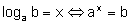
Wartość logarytmu może być dodatnia, ujemna lub równa zero. Z określenia logarytmu wynikają podane niżej własności:
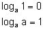
gdzie: 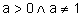 .
Z definicji logarytmu wynikają natomiast następujące równości:
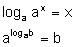
gdzie: 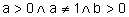 .
Logarytmem naturalnym nazywamy logarytm o podstawie e 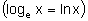 . Liczbę e definiuje się następująco: 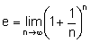 . Jest to liczba niewymierna. Do obliczeń często przyjmujemy:
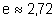 lub 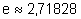
Funkcja logarytmiczna
Niech . Funkcję daną wzorem 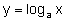 , gdzie 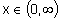 , nazywamy funkcją logarytmiczną.
Sporządzimy teraz wykres funkcji logarytmicznej, korzystając z następującego twierdzenia:
|
Wykres funkcji :
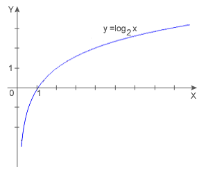
Wykres funkcji logarytmicznej nazywamy krzywą logarytmiczną. Krzywe logarytmiczne o równaniach i 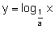 są symetryczne względem osi x dla każdego 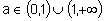 .
Własności funkcji logarytmicznej:
- 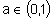
- Dziedziną funkcji jest zbiór liczb rzeczywistych dodatnich. 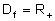
- Zbiorem wartości jest zbiór liczb rzeczywistych. 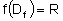
- Funkcja ma jedno miejsce zerowe: x=1.
- Funkcja jest malejąca.
- Funkcja jest różnowartościowa.
- 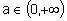
- Dziedziną funkcji jest zbiór liczb rzeczywistych dodatnich.
- Zbiorem wartości jest zbiór liczb rzeczywistych.
- Funkcja ma jedno miejsce zerowe: x=1.
- Funkcja jest rosnąca.
- Funkcja jest różnowartościowa.
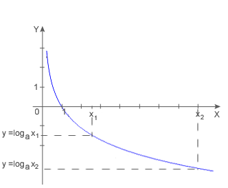
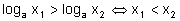
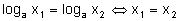
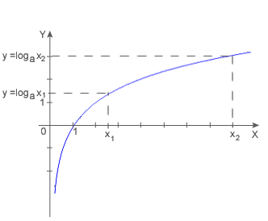
Własności logarytmów
- twierdzenie o logarytmie iloczynu
- twierdzenie o logarytmie ilorazu
- twierdzenie o logarytmie potęgi
- twierdzenie o zmianie podstawy logarytmu
Jeżeli a, x i y są liczbami dodatnimi oraz , to:
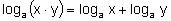
|
Jeżeli a, x i y są liczbami dodatnimi oraz , to:
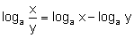
|
Jeżeli a, x są liczbami dodatnimi oraz , to dla dowolnego 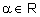 prawdziwa jest równość:
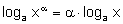
|
Jeżeli a, b, x są liczbami dodatnimi oraz 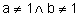 , to:
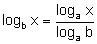
Logarytmy dziesiętne
Logarytmy o podstawie 10 nazywamy logarytmami dziesiętnymi lub briggsowskimi - od nazwiska angielskiego matematyka Henry Briggsa, który w 1614 roku wprowadził je po raz pierwszy.
Zamiast 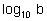 piszemy krótko 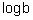 , np.
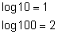
Logarytmy dziesiętne znalazły duże zastosowanie w obliczeniach astronomicznych i inżynierskich. Z tego powodu zostały ułożone tablice wartości tych logarytmów (patrz: tablice) i skonstruowano suwak logarytmiczny. Obecnie znaczenie logarytmów zmalało ze względu na wprowadzenie do powszechnego użytku kalkulatorów i innych urządzeń liczących.
Równania i nierówności logarytmiczne
|
|
Jak wiemy, wyrażenia logarytmowane i podstawa logarytmów muszą być dodatnie, przy czym podstawa logarytmu dodatkowo nie może być równa 1. Ograniczenia te wyznaczają dziedzinę równania lub nierówności logarytmicznej.
Jedną z metod rozwiązywania równań lub nierówności logarytmicznych jest doprowadzenie obu stron równania lub nierówności do logarytmy wyrażenia przy tej samej podstawie. Następnie wykorzystując różnowartościowość lub monotoniczność funkcji logarytmicznej o danej podstawie otrzymujemy związki między wyrażeniami logarytmowanymi. W najprostszych przypadkach możemy korzystać bezpośrednio z definicji logarytmu.
PRZYKŁADY:
- rozwiąż równanie .
- rozwiąż równanie 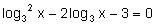 .
- rozwiąż równanie 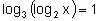 .
- rozwiąż równanie 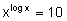 .
- rozwiąż nierówność 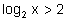 , gdzie x>0.
- rozwiąż nierówność 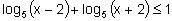 .
Zakładamy, że x+1>0 i x-1>0, czyli 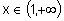 .
Korzystamy ze wzoru na logarytm iloczynu:
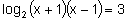
Prawą stronę równania zapisujemy w postaci logarytmu:
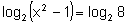
Korzystamy z różnowartościowości funkcji logarytmicznej:
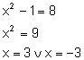
Rozwiązanie x=-3 jest sprzeczne z założeniem, a więc rozwiązaniem jest: x=3.
Zakładamy, że x>0. Podstawiamy 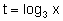 i otrzymujemy równanie:
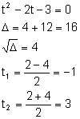
Wracamy do niewiadomej x i otrzymujemy:
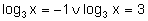
Korzystamy z różnowartościowości funkcji logarytmicznej:
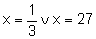
Zakładamy, że x>0 i 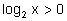 , czyli .
Dwukrotnie korzystamy z różnowartościowości funkcji logarytmicznej:
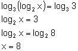
Logarytmujemy obie strony równania:
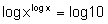
Korzystamy ze wzoru na logarytm potęgi:
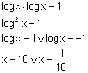
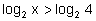
Nie zmieniamy zwrotu nierówności, ponieważ funkcja 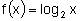 jest rosnąca.
Zakładamy, że x-2>0 i x+2>0, czyli .
Korzystamy z monotoniczności funkcji logarytmicznej:
Po uwzględnieniu założenia, otrzymujemy: